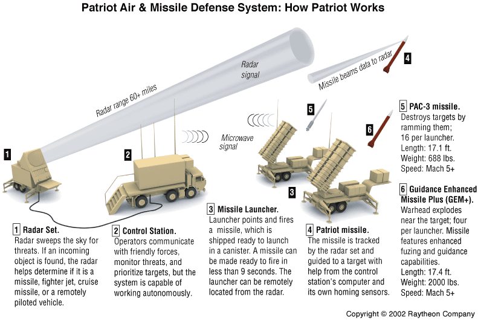
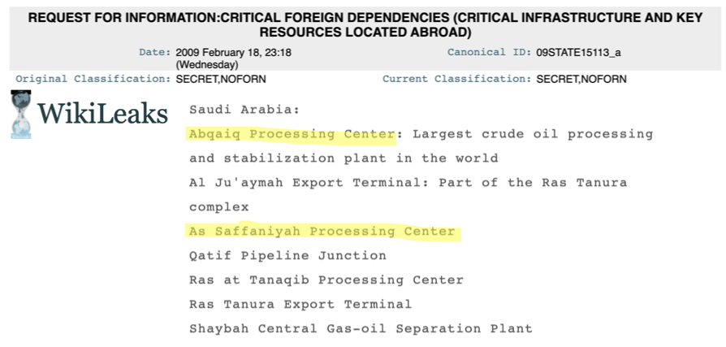

Did Saudi Arabia Know an Attack was Coming?

On September 14th 2019, a combination of drone and missile attacks targeted Saudi Arabia’s oil infrastructure at the Abqaiq and Khurais Aramco facilities, cutting the country’s oil production by over 50% and leading to the largest spike in the price of oil ever recorded. The attack was particularly embarrassing for Riyadh because billions of dollars' worth of air-defense systems were thwarted by drones that may have cost as little as $15,000. A year later, the expert consensus seems to be that the attack was successful because the Saudis were caught off guard, with the element of surprise giving the assailants a decisive edge.
An open source analysis of radar interference from Saudi Arabian air defenses suggests that the Kingdom might actually have been expecting an Iranian attack on its oil infrastructure: five days before the attack, a missile defense system pointed at Iran was switched on for the first time at one of the largest refineries in the country. This analysis also reveals the likely locations of the two U.S. Patriot missile batteries and troop detachments sent to Saudi Arabia following the attack. Not only were billions of dollars’ worth of air defenses thwarted by cheap drones and cruise missiles-- Saudi Arabia was expecting an Iranian attack on its oil infrastructure and still failed to protect itself.
The Element of Surprise
Many analysts have noted that Saudi Arabia’s air defense system was simply not geared to deal with such an attack. Abqaiq was guarded by six Shahine SAMs, several anti-aircraft guns, and a MIM-104 Patriot Missile battery. None of these systems are designed to detect and engage explosive-laden drones or low-altitude cruise missiles, and their presence at Abqaiq has even been called “irrelevant”. But bad hardware alone cannot be blamed for the success of the attack on Abqaiq and Khurais; Saudi Arabia has intercepted hundreds of drones and missiles over the course of the war in Yemen. So while it may be true that these types of attacks present a challenge for Saudi Arabia’s current air defenses, they are by no means unstoppable. As such, many argue that the decisive factor was the element of surprise.
A strong consensus has emerged among experts that Saudi Arabia was completely blindsided by the attack. Dr. Uzi Rubin, the former head of the Israeli Missile Defense Organization likened the attack to Pearl Harbor and attributed its success to the fact that it was carried out “with utter surprise, with no intelligence leaks and without being detected either upon launch or on the way to the targets.” Similarly, the BBC claims “It took the Saudis - and their US allies - completely by surprise.” Omar Lamrani, a senior military analyst at Stratfor, is quoted by the Guardian as saying: “This attack was something new, it was not something the Saudis were expecting to happen”.
But was Saudi Arabia really caught off guard by the attack? The answer to this question can be found by analyzing radar interference patterns from Saudi Patriot missile deployments.
Spotting Patriots using Sentinel-1 SAR Imagery
In 2018, Harel Dan made a fascinating discovery: MIM-104 Patriot PAC-2 missile batteries and other early warning systems can be spotted using publicly available Sentinel-1 imagery. As he explains in this post, the AN/MPQ-53 phased array radar on a Patriot battery operates using frequencies in the NATO G-band, which is the civilian C-band:

The European Space Agency's Sentinel-1 satellites carry a Synthetic Aperture Radar which operates on the same frequency; so when the radar on a Patriot battery is turned on, Sentinel-1 picks up interference. By combining ascending and descending orbital passes, the ground radar can be pinpointed where the interference lines cross. Subsequent analysis uses this code I wrote based on Harel Dan's post.
The Abqaiq Processing Center
Using this method, we can check in on the air defenses in Abqaiq. The interactive figure below overlays two Sentinel-1 images that can be toggled using the slider. On the left is a composite image of the three months leading up to the attack, with the locations of two patriot missile launch sites (identified by Michael Duitsman) highlighted in yellow. The Abqaiq Processing Center can be seen quite clearly in the center of the map, but no interference can be detected meaning that the radar wasn’t even turned on. Clicking on the image below and dragging the slider to the left overlays a composite of the months following the attack:
Strong interference patterns can be seen converging on the site of the eastern Patriot installation, suggesting that the attack motivated them to actually turn the radar on. We can get a more detailed sense of how the Patriot installation at Abqaiq was used by plotting the interference patterns over time to see when the radar was switched on. This is done by drawing a box over the Abqaiq plant and calculating the average value of the VH polarization for each image within the box over time:
The spikes on this graph correspond to the blue and red Patriot radar interference shown in the Sentinel-1 images above. Between 2017 and the attack in September 2019, the radar on the Abqaiq Patriot missile installation was only turned on three times; twice in 2017, and once in May of 2019. The smaller spikes constitute interference from early warning systems in nearby Bahrain. Due to Sentinel-1’s roughly 5 day revisit time, we can’t know for sure how long the radar was running for each of these instances. However, the radar was not observed running in consecutive images, meaning that it must have been on for fewer than five days each time. The radar was switched on two weeks after the attack on September 28th, but then promptly turned off again.
The fact that one of Abqaiq’s main early warning systems wasn’t even turned on before or during the attack supports the conclusion that Saudi Arabia was not expecting an attack-- at least, not on Abqaiq.
The Saffaniyah Processing Center
Looking at the whole of Saudi Arabia before and after the attack, only one other Patriot system can be seen guarding oil infrastructure:
Clicking and dragging the slider to the right displays an interference-free SAR image of the Saffaniyah plant and a close up optical image of the Patriot installation indicated by a yellow box. The installation shows four positions facing North and two pointing East. The white box denotes the Saffaniyah Processing Center. The Saffaniyah oil field just off its coast is the largest offshore oil field in the world. It produces about 1.3 million barrels of crude per day, and contains an estimated 34 billion barrels of oil and over 5 trillion cubic feet of natural gas. Most of the oil from the field is processed at the Saffaniyah Processing Center, located in the country’s Northeast, just 200 kilometers south of Iran:
If Iran were trying to attack Saudi oil infrastructure, Saffaniyah seems like it would be an ideal target, not least due to its proximity and systemic importance. When plotting the Saffaniyah Patriot’s radar interference over time, an interesting pattern emerges:
This graph shows no signs of interference from Patriot radar for three years. On September 9th, five days before the attack on Abqaiq, a Patriot radar comes online and stays operational until September 21st, a week after the attack.
This could, of course, be a coincidence. It could also suggest that Saudi Arabia knew an attack on its oil infrastructure originating from Iran was imminent, but thought Saffaniyah a likelier target than Abqaiq. The speed with which Saudi Arabia blamed Iran could corroborate this; despite the Houthis claiming responsibility and other countries such as the UK originally contending that it was unclear where the strikes originated from, the U.S. and Saudi Arabia pointed the finger at Iran just hours after the attack.
Attack Trajectories
The trajectory of the attack could suggest that Iran was aware that Saffaniyah was on high alert. The fact that the missiles were likely launched from Omidiyeh air base in Iran and hit Abqaiq and Khurais from the Northwest could in part have resulted from an attempt to circumvent the Patriot radar at Saffaniyah.
The interactive map below geolocates the exact points of impact at the Abqaiq Processing Center based on satellite imagery released by the U.S. government:
Clicking on the blue dot in the middle displays an overview of the whole facility highlighting damaged areas. The red dots denote impact points. Clicking on these points displays a corresponding annotated satellite image with a red arrow showing the approximate angle of attack (note: satellite images are facing East). The red lines on the map correspond to these attack trajectories. The average angle of attack suggested by the impact points is roughly 290ºW.
The same analysis is applied to Khurais:
Once again, clicking on the red dots displays annotated satellite images showing a close-up view of the damage as well as the likely angle of attack. The Khurais facility appears to have been hit from a more Northern angle, roughly 350ºN.
Combining the two angles at which Abqaiq and Khurais were hit with additional data points yields the likely overall trajectory of the attack. The interactive map below plots the trajectories in red, oil processing facilities (Abqaiq, Khurais, and Saffaniyah) in blue, and air-defense systems in green:
The presumed origin of the attack, denoted by the purple point, is the Omidiyeh Air Base in Southern Iran. After leaving the air base, the aircraft appear to have traveled Westward just off the coast of Kuwait City; a twitter video geolocated to the Al-Bidaa beach on the Eastern coast of the city appears to show low flying drones passing over the water just before the attack, and there were multiple other sightings of aircraft in the area. The location of the twitter video is shown as a yellow dot on the map above. After passing Kuwait city, the aircraft likely traveled South-West together for a while-- had they both started heading directly towards their targets, Abqaiq would have been hit from a much more Northern angle.
The curved trajectory shown in red above results in Abqaiq being hit from 290ºW, and Khurais from 350ºN. This hypothetical flight path gets very close to the effective range of the Saffaniyah Patriot radar denoted by the green circle, but stays just out of range. This strange trajectory begs several questions. Why go hundreds of kilometers out of the way, only to turn around and approach Abqaiq from the North-West? Furthermore, why not just target Saffaniyah?
Though it is by no means the only explanation, both of these questions could be explained by a deliberate Iranian effort to avoid Saffaniyah after seeing the Patriot radar come online. A plausible hypothetical scenario emerges: Iran plans an attack on the As Saffaniyah Processing Center. The plan leaks, and Saudi Arabia turns on the Patriot radar in Saffaniyah. Rather than abort, Iran decides to circumvent the radar and strike Abqaiq and Khurais from the North-West.
Safeguarding infrastructure at Saffaniyah and Abqaiq is not only a priority for Saudi Arabia. A leaked state department cable titled “Critical Infrastructure and Key Resources Located Abroad” provides a list of facilities that “if attacked would critically impact the U.S.” The list contains seven locations in Saudi Arabia, including the Abqaiq Processing Center and the As Saffaniyah Processing Center:
Conclusion
Four days before the most significant attack on oil infrastructure in history, Saudi Arabia turned on a missile defense radar facing Iran at its largest offshore oilfield. This could be one hell of a coincidence, or it could suggest that the Kingdom had prior warning that the attack was coming.
Safeguarding infrastructure at Saffaniyah and Abqaiq is not only a priority for Saudi Arabia. A leaked cable titled “Critical Infrastructure and Key Resources Located Abroad” provides a list of facilities that “if attacked would critically impact the U.S.” The list contains seven locations in Saudi Arabia, including the Abqaiq Processing Center and the As Saffaniyah Processing Center:
These findings challenge the current consensus among experts that Saudi Arabia was taken completely by surprise. Though it appears true that they weren’t expecting an attack at Abqaiq or Khurais, they certainly seemed to be expecting something: for the first time in four years, Saudi Arabia deployed a Patriot battery facing Iran to guard its largest offshore oil field-- five days before the attack on Abqaiq. A TRT article asks “was it a blunder of staggering proportions or an unexpected surprise?” The evidence seems to suggest it was the former. Not only were billions of dollars' worth of air defenses thwarted by cheap drones and cruise missiles; Saudi Arabia seemed to have been expecting the attack, and was still incapable of defending itself.